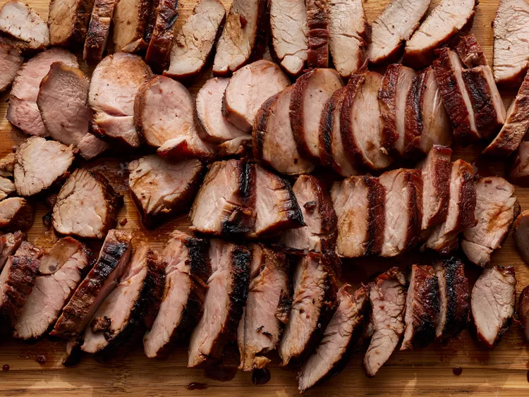

Char Siu (BBQ Pork)

Description
The wonderfully sweet and savory flavor of this Chinese dish comes from a unique blend of pantry ingredients. Soy sauce, honey, ketchup, and brown sugar create the base of the luscious marinade, while hoisin sauce and red bean curd add depth.
Juicy pork tenderloin is the main event of this 5-star recipe. Choose two 1 lb. tenderloins for best results, substituting pork loin or pork chops if necessary.
Char siu can be eaten as is, over rice, or paired with bright green vegetables for a great contrast. Use this zesty pork to stuff steamed buns, in pork fried rice, or as a topping in
Ingredients
- 1/2 cup soy sauce
- 1/3 cup honey
- 1/3 cup ketchup
- 1/3 cup brown sugar
- 1/4 cup Chinese rice wine
- 2 tablespoons hoisin sauce
- 2 tablespoons red bean curd (Optional)
- 1 teaspoon Chinese five-spice powder (Optional)
- 2 (1 pound) pork tenderloins
Steps
- Gather all ingredients.
- Stir soy sauce, honey, ketchup, brown sugar, rice wine, hoisin sauce, red bean curd, and five-spice powder together in a saucepan over medium-low heat. Cook and stir until just combined and slightly warm, 2 to 3 minutes.
- Meanwhile, slice each pork tenderloin lengthwise into 1 1/2- to 2-inch-thick strips. Place pork strips in a large, resealable plastic bag.
- Pour marinade into the bag with the pork. Squeeze air from the bag, seal, and turn the bag a few times until pork is well coated. Marinate in the refrigerator, 2 hours to overnight.
- When ready to cook, preheat a charcoal grill for medium-high heat and lightly oil the grate.
- Remove pork from marinade and shake to remove excess liquid. Set aside the remaining marinade for basting.
- Rake the hot coals into two equal piles on opposite sides of the charcoal grate. Add a small container of water to the grate. Place pork strips in the center of the grate for indirect cooking.
- Cook pork over indirect heat, turning regularly and basting as desired, until an instant-read thermometer inserted into the center reads at least 145 degrees F (63 degrees C), 30 minutes or longer.